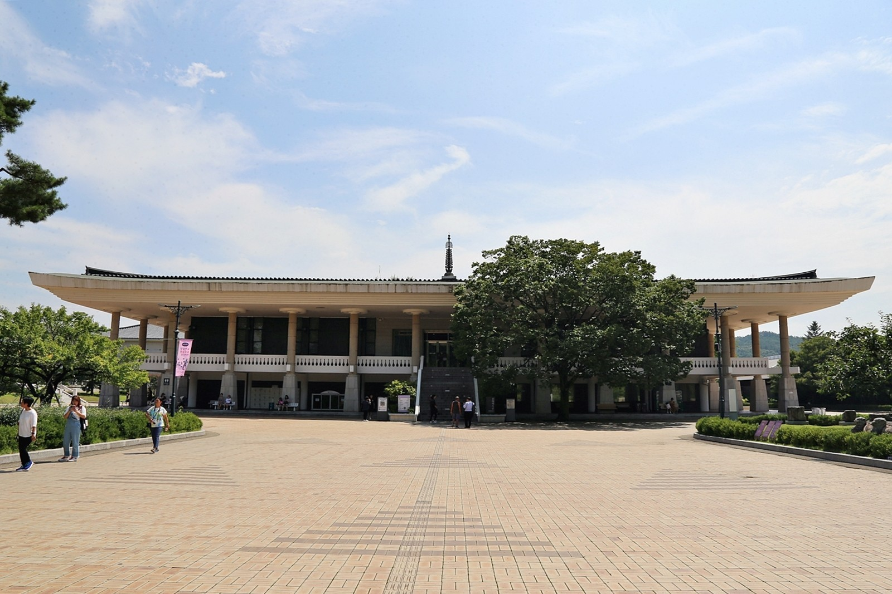
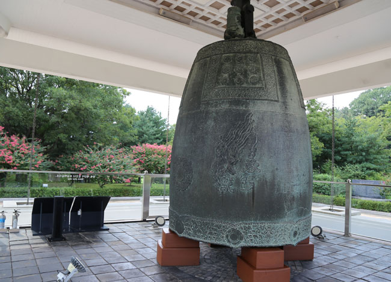
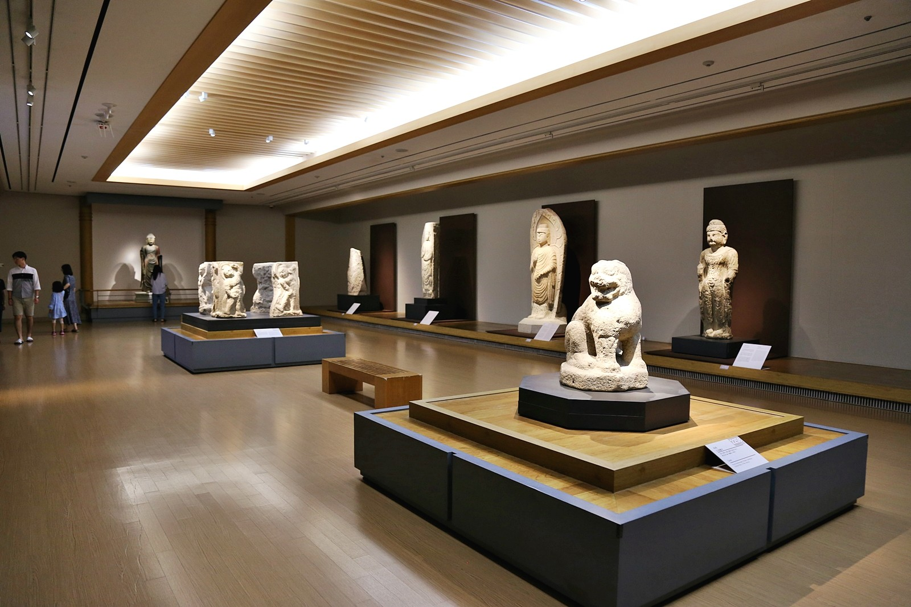
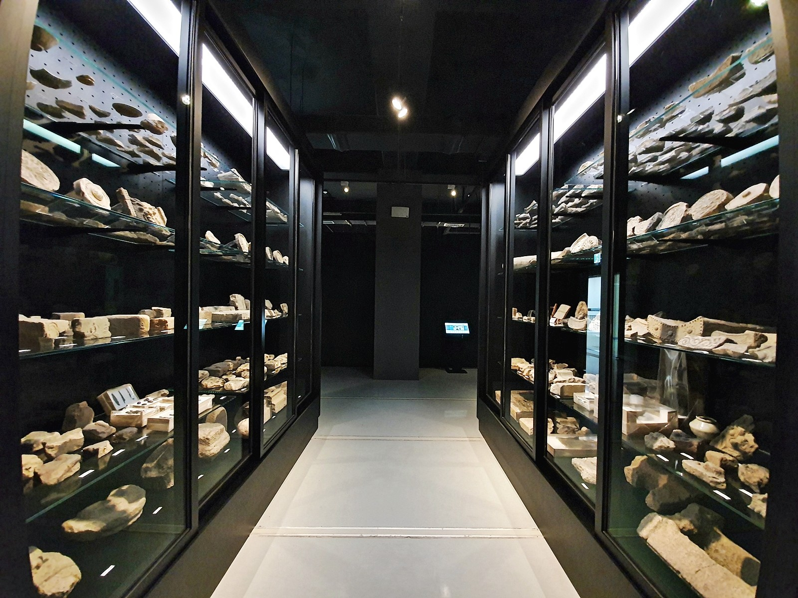

경주여행핵심코스

- 경주여행
- 여행코스추천
- 경주여행핵심코스


경주 시내권 핵심 바이블
- 경주 시내권 핵심 바이블
- 팔방미인 보문관광단지 여행
- 경주의 세계문화유네스코를 찾아서
- 신라 이후 천년경주
- 유휴(You 休)!경주 바다에 머물다
여행코스설명
#시내권핵심코스 #느긋한코스 #시내권도보여행 #시내권자전거여행
당일치기 여행, 혹은 짧은 1박2일 여행을 계획하고 있는 이들에게 추천한다. 반경 3킬로미터 이내에 모든 여행지가 모여 있다. 느긋하게 쉬어가며 도보여행하거나, 경주의 정취를 만끽하며 자전거여행하기 안성맞춤인 코스. 경주를 더 보고 싶은 욕심이 생긴다면, 이 시내권 핵심바이블 코스에 불국사나 보문단지권 여행 스팟을 한 두 곳 추가해도 좋다.
코스제안
1일차
- 1국립경주박물관
- 2월정교
- 3첨성대
- 4대릉원
- 5동궁과 월지
2일차
- 1월성발굴현장
- 2황리단길


- 
- 

- 
- 
국립경주박물관
#국립경주박물관#신라역사#국보급유물관람#아이와함께#실내데이트
- 주소경상북도 경주시 일정로 186, 국립경주박물관 (인왕동)
- 전화번호054-740-7500
- 홈페이지https://gyeongju.museum.go.kr/
- 관람시간매일 10:00 - 18:00 / 일요일, 공휴일 10:00 - 19:00
- 야간연장개관10:00 - 21:00 ( 매월 마지막 주 수요일, 3~12월 매주 토요일 )
- 정기휴관일1월 1일, 설날, 추석
- 관람료무료
- 주차정보전용 주차장(무료)이용